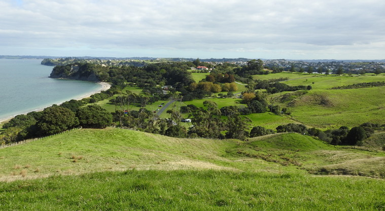

Shakespear Regional Park is a regional park and scenic open sanctuary and working farm located at the tip of the Whangaparāoa Peninsula, about a 40-minute drive north of central Auckland. It features pest-free wildlife habitats, popular swimming beaches, and panoramic Hauraki Gulf views. There is a 1.7km predator-proof fence across the peninsula, protecting the rare wildlife that inhabit it, such as the little spotted kiwi, rare invertebrates (such as the Pūriri moth), and 7 species of native lizards.

The main reason people come to Shakespear is to camp (at the beachside campsite Te Haruhi Bay Campground), hike, and swim there. It is a perfect spot for scenic views and swimming. Gates are open from 6:00 AM to 7:00 AM (and are extended to 9:00 PM during daylight saving hours). Camping is limited to tents and there is a specific zone for self-contained vehicles. It has 4.8 stars on Google Maps with 4,338 reviews at the time of writing.